How turbulence sets the power that LP-ESC and LP-PIESC lose, and the tuning that loses least
Robot Control Lab · Systems Engineering · UT Dallas
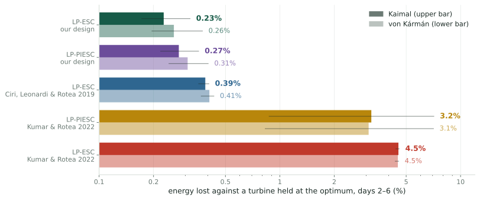
41% less energy lost by the proposed LP-ESC than by the best published design, the LP-ESC of Ciri, Leonardi & Rotea 2019 (same one-day tracking time): 0.385% → 0.227%, about 27 MWh per turbine-year at 8 m/s
12× less by the proposed LP-PIESC than by the LP-PIESC of Kumar & Rotea 2022, same estimator: 3.19% → 0.275%, about 500 MWh per turbine-year
46% less by the proposed LP-ESC than by the LP-ESC tuning of Kumar & Rotea 2022, both tracking the optimum in 740 s: 4.51% → 2.42%, about 360 MWh per turbine-year
Six-day simulations of the nonlinear NREL 5 MW turbine at 8 m/s, turbulence intensity 0.10, four wind records per spectrum; every controller runs in the same wind as a turbine held at the optimum. Each published design is paired with the proposed design of the same type, tracking at least as fast. Bars: mean over records, lines: range. Solid: Kaimal; light: von Kármán.
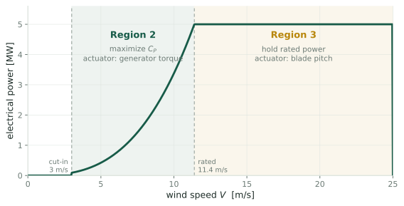
Below rated wind speed the turbine should run at the tip-speed ratio \(\lambda = R\Omega/V\) that maximizes the power coefficient \(C_P(\lambda)\). The standard controller sets the generator torque to \(u\,\Omega^2\); the gain \(u\) alone fixes where the rotor settles, at every wind speed (Unit 1).
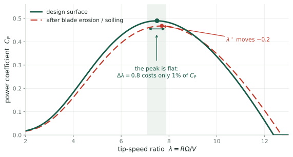
The best gain \(u^\star\) depends on the blades, which erode, ice and foul. It must be found online, and found again when it moves.
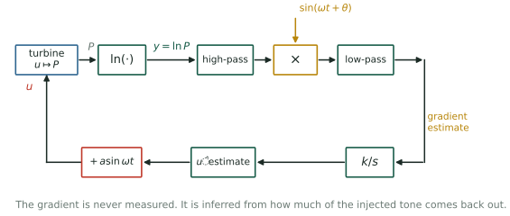
LP-ESC: demodulation Correlate \(y\) with the dither over each period: the in-phase channel \(\hat g\) [Rotea 2017; Ciri, Leonardi & Rotea 2019].
LP-PIESC: least squares Fit \(\dot y \approx \theta_0 + \theta_1(\nu - \hat\nu)\) by recursive least squares; proportional-integral update [Kumar & Rotea 2022]. Here \(\nu = \nu^\star u/u^\star\) is the normalized gain (\(\nu^\star = 0.061\)) and \(\hat\nu\) the integrator state, about which the dither swings.
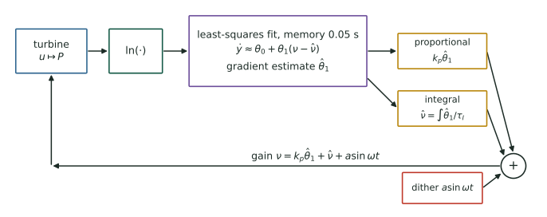
Published tuning [Kumar & Rotea 2022]: \(T = 314\) s, \(a = 0.082\,\nu^\star\), estimator memory \(1/k_T = 0.05\) s, ridge \(q = 10^{-6}\), \(k_p = 5\times10^{-6}\) s, \(\tau_I = 2.8\). Reported to reach the optimum almost at once, with a quarter of the classical dither.
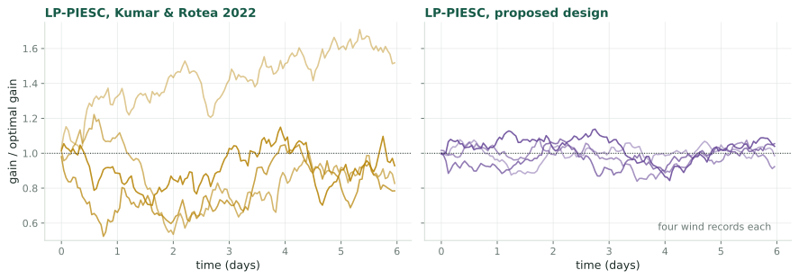
Scatter \(\sigma(\tilde u)\): the standard deviation of the gain error \(\tilde u = u - u^\star\) once the loop has settled, a spread over time quoted as a fraction of \(u^\star\). It concerns the center of the dither only; the dither’s own cost is counted separately. Every excursion costs power. With \(J(u)\) the log-power at rest at gain \(u\) (apart from a constant set by the wind), which peaks at \(u^\star\), the loss is \(\tfrac12|J''|\,\sigma(\tilde u)^2\) plus the dither’s cost.
Given the wind’s spectral density and the tuning of each controller:
The answer in one line. Write the wind speed as \(V = \bar V(1+\varepsilon)\), with mean \(\bar V\) and relative fluctuation \(\varepsilon\). At the optimum the wind enters log-power as \(3\varepsilon\), so each estimate is the wind seen through a known window; a slow loop (one whose tracking time spans many dither periods) sees only the wind’s density at the dither frequency; the scatter, the loss and the best tuning then follow in closed form from three numbers: that density, the curvature of \(C_P\) at its peak, and the rotor time constant.
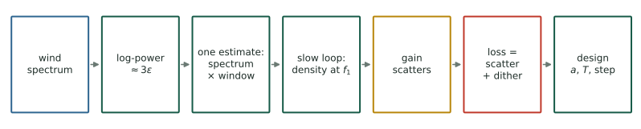
The wind \(\Phi(f_1)\): the turbulence density at the dither frequency \(f_1 = 1/T\) (IEC Kaimal or von Kármán).
The rotor \(\tau_r = 6.88\) s: the time constant with which the rotor follows the gain (at 8 m/s).
The power curve \(\chi = 6.3\): how sharply \(C_P\) peaks; \(|J''(u^\star)|\,u^{\star2} = \chi/9 = 0.70\).
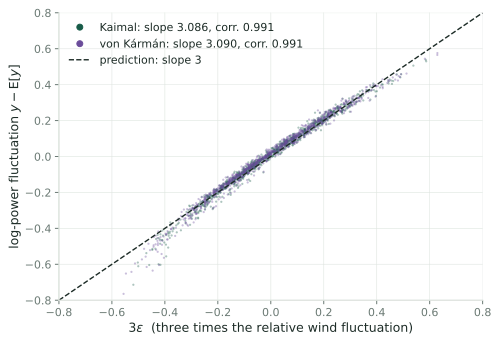
With \(V = \bar V(1 + \varepsilon)\), power is \(\propto V^3 C_P(\lambda)\), so \[y = \ln P = \text{const} + 3\ln(1+\varepsilon) + \ln C_P(\lambda).\]
At \(u^\star\) the power curve is flat: \(C_P'(\lambda^\star) = 0\), so the wind’s effect through \(\lambda\) drops out at first order, and \[y - \mathbb{E}[y] = 3\,\varepsilon + O(\sigma_\varepsilon^2),\] where \(\sigma_\varepsilon\), the standard deviation of \(\varepsilon\), is the turbulence intensity (0.10).
Simulation: slope 3.086 (Kaimal), 3.090 (von Kármán); correlation 0.991.
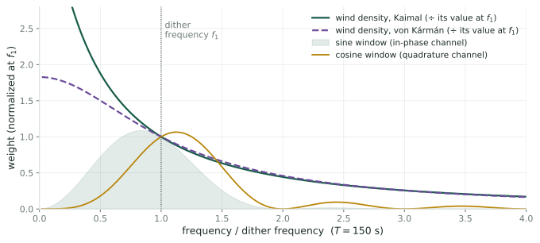
The demodulated estimate correlates \(y\) with \(\sin\omega t\), so its noise is \(6Z_n/(aT)\) with \(Z_n = \int_0^T \varepsilon(nT+t)\sin\omega t\,dt\), and \[\operatorname{Var}(Z) = \int \Phi(f)\,|\hat w(f)|^2\,df ,\] where \(\hat w(f) = \int_0^T \sin(\omega t)\,e^{-i2\pi ft}\,dt\), the dither’s Fourier transform over one period, is the estimate’s window on the wind.
Both windows pass \(f_1\) equally; the sine window leans to low frequencies, where the wind has its energy, so the quadrature (cosine) channel is the quieter one per estimate (Units 12–14).
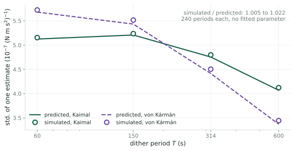
Predicted and simulated standard deviation of one estimate agree within 0.5 – 2.2 % for \(T\) from 60 to 600 s under both spectra, with no fitted parameter; the small excess is the size and sign of the terms the prediction leaves out.
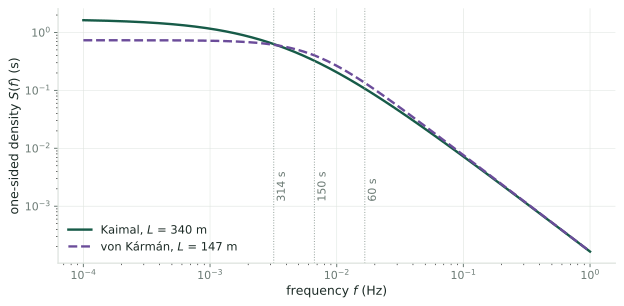
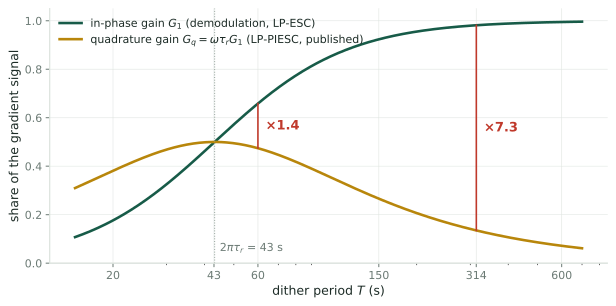
The regressor is \([1, d]\), with \(d = \nu - \hat\nu = a\sin\omega t\) the dither (proportional term neglected). Over a 0.05 s memory it is frozen, so the ridge fit, with effective ridge weight \(\gamma = 4\times10^{-4}\), returns the minimum-norm product \[\hat\theta_1 = \frac{d\,\dot y}{1 + d^2 + \gamma},\] whose period average is the cosine (quadrature) coefficient of \(y\). The rotor returns the dither in phase with gain \(G_1 = 1/(1+(\omega\tau_r)^2)\), which demodulation reads, and a quarter period late with gain \(G_q = \omega\tau_r G_1\), which this estimate reads: 0.135 against 0.981 at 314 s.
Simulation: \(\hat\theta_1\) follows \(d\,\dot y\) with correlation 0.997; in-phase / quadrature 7.24, predicted \(1/(\omega\tau_r) = 7.27\).
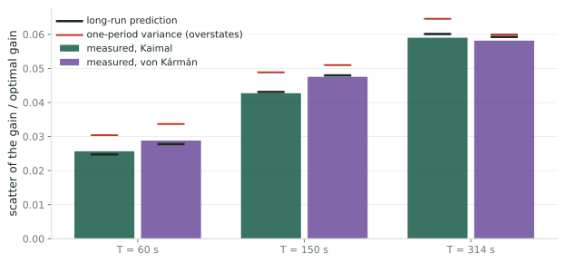
Each period a loop corrects a fraction \(K = T/\tau_c\) of the gain error; it is slow when \({K \ll 1}\) (one day at 60 s: \({K = 7\times10^{-4}}\)). Averaging \(N\) estimates is one estimate over \(N\) periods; its window narrows onto \(f_1\) (Fejér). So the noise a slow loop feels is the long-run variance \[\sigma_\infty^2 = \frac{2\Psi}{a^2T},\qquad \Psi = 9\,\Phi(f_1),\] and the scatter at tracking time \(\tau_c\) is \[\sigma(\tilde u)^2 = \frac{\Psi}{a^2 g^2\,\tau_c\,J''^2},\quad g = G_1 \text{ or } G_q .\]
Simulated loops: within 4 % of the long-run prediction; one period’s variance overstates by up to 18 %.
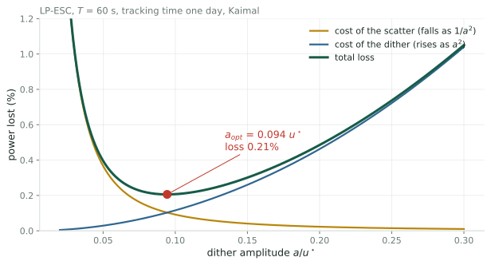
\[\ell(a) = \underbrace{\frac{\Psi}{2a^2g^2\tau_c|J''|}}_{\text{scatter}} + \underbrace{\frac{|J''|G_1a^2}{4\vphantom{2a^2g^2\tau_c|J''|}}}_{\text{dither}}\]
Least when the two are equal: \[a_{\mathrm{opt}} = \Big(\frac{2\Psi}{g^2G_1\tau_cJ''^2}\Big)^{1/4},\qquad \ell_{\mathrm{min}} = \sqrt{\frac{\Psi G_1}{2\tau_c g^2}}.\]
The step size or integral time then follows from the tracking time: \[\begin{aligned}\kappa &= \frac{T}{\tau_cG_1|J''|} &&\text{(LP-ESC)},\\[2pt] \tau_I &= \frac{\tau_c\pi a^2G_q|J''|}{T} &&\text{(LP-PIESC)}.\end{aligned}\]
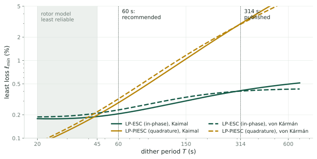
Shorter periods move \(f_1\) up the falling spectrum, so the least loss falls, until the rotor’s lag takes over. Recommendation: \(T = 60\) s (about nine rotor time constants): LP-ESC 0.21 %, LP-PIESC 0.29 % (Kaimal, one day), against 0.41 % and 2.98 % at 314 s. The quadrature penalty \(1/(\omega\tau_r)\) falls from 7.3 to 1.4.
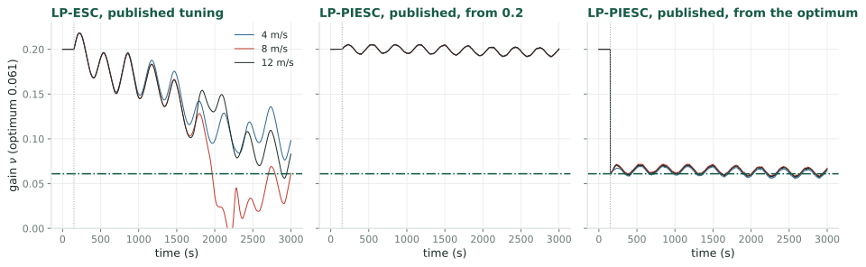
Its integral path is a slow loop on the quadrature channel with loop gain \(7.13\times10^{-4}\) per period: tracking time 5.1 days, stationary scatter 0.33 \(u^\star\), loss 3.9 % (Kaimal). The published fast convergence appears only when the integrator starts at the optimum, which the closed-form optimum makes possible.
| controller (\(T\), \(a/u^\star\)) | Kaimal, days 2–6 | predicted | von Kármán, days 2–6 | predicted |
|---|---|---|---|---|
| LP-ESC, Kumar & Rotea 2022 (314 s, 0.33) | 4.51 % | 4.48 % | ||
| LP-ESC, proposed design at 740 s (60 s, 0.31) | 2.42 % | 2.22 % | 2.70 % | 2.50 % |
| LP-PIESC, Kumar & Rotea 2022 (314 s, 0.082) | 3.19 % (0.9–7.1) | 3.9 %a | 3.09 % | |
| LP-ESC, Ciri, Leonardi & Rotea 2019 (150 s, 0.136) | 0.385 % | 0.38 % | 0.406 % | 0.39 % |
| LP-PIESC, proposed design (60 s, 0.111) | 0.275 % | 0.29 % | 0.308 % | 0.32 % |
| LP-ESC, proposed design (60 s, 0.094) | 0.227 % | 0.21 % | 0.258 % | 0.23 % |
Energy lost against a turbine held at \(u^\star\) in the same wind; mean of four six-day records. a stationary prediction for a 5.1-day tracking time, which six days do not reach. Tracking times: 740 s for the 2022 LP-ESC and the design beside it; 5.1 days for the 2022 LP-PIESC; one day for every other row.
The designs lose what the formulas predict. The 2022 LP-PIESC depends on the wind record (0.9 to 7.1 %). At the 2022 LP-ESC’s 740 s tracking time the proposed design loses 2.42 %, 9 % above the slow-loop prediction: that loop is no longer slow.
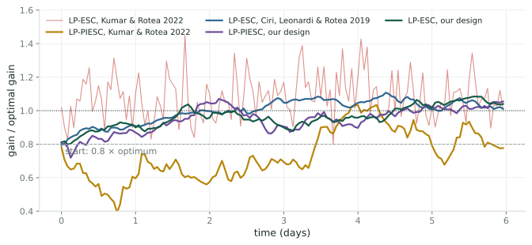
Gain started at 0.8 \(u^\star\). Energy lost on the first day: proposed LP-ESC 0.67 % against LP-ESC 2019 0.89 %; proposed LP-ESC at 740 s 2.29 % against LP-ESC 2022 4.25 %; proposed LP-PIESC 0.68 % against LP-PIESC 2022 3.2 % (0.6 to 9 % with the wind record). The 2022 LP-PIESC’s gain wanders instead of converging (0.78–1.45 \(u^\star\) after six days).
−41 % proposed LP-ESC vs. the best published design (LP-ESC, Ciri, Leonardi & Rotea 2019, same tracking time): 0.16 points, 27 MWh per turbine-year at 8 m/s. Von Kármán: −36 %.
÷12 proposed LP-PIESC vs. LP-PIESC, Kumar & Rotea 2022, same estimator: 3.19 % → 0.275 %, 2.92 points, 499 MWh per turbine-year. Von Kármán: ÷10.
−46 % proposed LP-ESC vs. LP-ESC, Kumar & Rotea 2022, same tracking time (740 s): 4.51 % → 2.42 %, 2.09 points, 358 MWh per turbine-year. Von Kármán: −40 %.
Remark. Measured in our simulator: NREL 5 MW rotor with a static power curve and a first-order rotor, aerodynamic power, 8 m/s, turbulence intensity 0.10, synthesized turbulence. The published designs were tuned in other simulators; the comparison holds turbine, wind and tracking time fixed for both LP-ESC comparisons, so the design is the only difference; the proposed LP-PIESC tracks five times faster than the published one. Reference turbine: 1.95 MW mean, 17.1 GWh per year at this wind.
The gap is a tuning choice The penalty comes from the 0.05 s memory plus fitting \(\dot y\). Fit \(y\) itself over a full period and least squares reads the in-phase channel, with demodulation’s loss. At 60 s the published estimator costs only 20 % more (0.275 vs 0.227 %).
Least squares gives more than an estimate An explicit model, an information matrix that can serve as an error bar, and updates in continuous time: useful for a loop that acts on its own uncertainty.
The quadrature channel’s one merit A slow wind drift within a period reads as gradient in the sine window but cancels in the cosine window. It loses more signal (\(\times\omega\tau_r\)) than it saves in noise.
Speed was the published motivation This work measures steady-state loss of a slow loop and neglects the proportional path. Whether a retuned least-squares loop recovers faster after the optimum moves is open.
Three numbers
One choice: the tracking time \(\tau_c\) (blades change over weeks; recover from start-up within a day: \({\tau_c = 1}\) day).
Then
A design curvature \({J''_\mathrm{d} = rJ''}\) leaves the loop unbiased, scales the tracking time by \(r\), and costs \({(\sqrt r + 1/\sqrt r)/2}\) of the least loss for that tracking time: 6 % at \(r = 2\) (B15).
Next: measure \(J''\) online; test on measured turbine data and electrical power; measure recovery after the optimum moves, where LP-PIESC’s proportional path was meant to act.
Technical report and workbook: rotea repository, papers/esc-spectral-noise/.
Derivations and checks behind the main slides. Each cites the units of the technical report that prove it.
At a fixed tip-speed ratio \(\lambda = R\Omega/V\), both torques on the rotor scale as \(V^2\):
Aerodynamic torque \[\tfrac12\rho\pi R^3V^2\,\frac{C_P(\lambda)}{\lambda}\]
Generator torque \[u\,\Omega^2 = u\,\frac{\lambda^2V^2}{R^2}\]
so their balance is free of the wind:
\[\frac{C_P(\lambda)}{\lambda^3} = c_u\,u,\qquad c_u = \frac{2}{\rho\pi R^5}.\]
One stable rest point For every gain below \(1.86\,u^\star\) there is exactly one, \(\lambda_{\mathrm{eq}}(u)\), on the branch through \(\lambda^\star\); near it the rotor is first order with time constant \(\tau_r\) (Units 1–2).
The objective Log-power at rest is a wind constant plus \(J(u) = \ln C_P(\lambda_{\mathrm{eq}}(u))\), which peaks at \(u^\star = 2.23\times10^6\) N m s² with \(J''(u^\star) = -\chi/(9u^{\star2})\) (Unit 3).
\[\tau_r = \frac{2I\lambda^{\star2}}{3\rho\pi R^4\bar V C_P^{\mathrm{max}}} = 6.88\ \text{s at } 8\ \text{m/s},\qquad \tau_r\propto 1/\bar V.\]
The rotor’s inertia \(I_{\mathrm{rotor}}\) follows from the NREL 5 MW blade and hub data, moving each blade to the shaft by the parallel-axis theorem: \[I_{\mathrm{rotor}} = 3\cos^2\beta_p\,(I_b + 2r_hS_b + m_br_h^2) + 115\,926\ \text{kg m}^2,\]
with \(\beta_p\) the precone angle, \(r_h\) the hub radius, \(m_b\), \(S_b\), \(I_b\) the blade’s mass and its first and second mass moments about its root, and 115 926 kg m² the hub.
3.88 × 10⁷ kg m² the rotor, \(I_{\mathrm{rotor}}\)
+ 97² × 534 kg m² the generator, seen through the 97 : 1 gearbox
4.38 × 10⁷ kg m² the total, \(I\)
Remark. [Kumar & Rotea 2022] use \(3.54\times10^7\) kg m², which omits the hub-radius offset \(r_h = 1.5\) m.
From the gain to log-power, the rotor is a first-order lag with unit static gain and time constant \(\tau_r\), followed by the slope \(J'\). A dither \(a\sin\omega t\) therefore returns as
\[\delta y = J'a\,(G_1\sin\omega t - G_q\cos\omega t),\qquad G_1 = \frac{1}{1+(\omega\tau_r)^2},\quad G_q = \omega\tau_rG_1 .\]
0.981 / 0.135 \(G_1\) / \(G_q\) at the published period, \(T\) = 314 s
0.66 / 0.48 \(G_1\) / \(G_q\) at the recommended period, \(T\) = 60 s
43 s \(T = 2\pi\tau_r\): the two cross, and \(G_q = 1/2\) is largest (Unit 4)
Demodulation reads the in-phase part \(G_1\); the published LP-PIESC estimator reads the quadrature part \(G_q\) (Link 3).
A Fourier coefficient \[\hat g_n = B_1/a,\qquad \hat g^c_n = A_1/a,\] with \(B_1\) and \(A_1\) the first sine and cosine coefficients of \(y\) over period \(n\). It ignores the mean and every higher harmonic, but a drift within the period reads as gradient (Unit 5).
Its bias \[\hat g_n = J'(u_n) + \tfrac{a^2}{8}J'''(u_n) + O(a^4),\] with \(u_n\) the center of the dither in period \(n\) (Unit 6).
At \(a = 0.136\,u^\star\):
0.37 % above \(u^\star\): where the bias makes the loop settle
5 × 10⁻⁶ of the power: what that offset costs
0.32 % of the power: what the dither itself costs
The bias is negligible. The error that matters is random.
The model \[V = \bar V(1+\varepsilon),\qquad \Gamma(\tau) = \mathbb{E}[\varepsilon(t)\varepsilon(t+\tau)],\] with \(\varepsilon\) stationary and \(|\Gamma| \le \Gamma(0) = \sigma_\varepsilon^2 = \mathrm{TI}^2\).
Its spectrum \[\Phi(f) = \int\Gamma(\tau)e^{-i2\pi f\tau}d\tau,\qquad \sigma_\varepsilon^2 = \int_0^\infty S\,df,\] with \(S = 2\Phi\) the one-sided density (Units 7–8).
Orders of smallness Remainders are ranked by RMS in powers of \(\sigma_\varepsilon\). With sixth moments finite, products of \(k \le 3\) filtered winds are \(O(\sigma_\varepsilon^k)\) (Unit 9).
What the tip-speed ratio sees The high-passed wind, with corner \(1/(2\pi\tau_r) = 0.023\) Hz; the mean of \(\lambda\) stays at \(\lambda^\star\) to second order (Unit 10).
72 % of the Kaimal variance lies below that corner, where the rotor follows the wind
1 · A weighted ridge fit At every instant the recursion returns the minimizer of an exponentially weighted ridge cost with memory \(1/k_T = 0.05\) s (Unit 15).
2 · A fit of filtered \(\dot y\) With \(\tilde y\) the prediction error and \(c\) the filtered regressor, the states combine into \[z = \tilde y + c^\top\hat\theta,\quad \dot z = -k_fz + \dot y.\] So the estimator regresses \(\dot y\), low-passed at rate \(k_f\), on the equally filtered regressor (Unit 16).
3 · A frozen regressor Over the memory the regressor barely moves, so the fit is the minimum-norm product, whose period average is the quadrature channel (Unit 17).
γ = 4 × 10⁻⁴ effective ridge weight, \(qk_f^2\)
𝓜 = 0.0025 memory number \(\omega^2/(k_T^2\gamma)\): small means frozen
A fit of \(y\) itself on \([1, d]\) over a full period returns the in-phase channel instead.
A first-order recursion \(x_{n+1} = \alpha x_n + \kappa v_n\), driven by noise \(v_n\) of variance \(\sigma_v^2\) and correlation \(\rho_k\) between values \(k\) steps apart, has variance
\[\operatorname{Var}(x) = \frac{\kappa^2\sigma_v^2}{1-\alpha^2}\Big[1 + 2\sum_{k\ge1}\alpha^k\rho_k\Big].\]
A slow loop, \(\alpha \to 1\) The bracket tends to \(1 + 2\sum_{k\ge1}\rho_k\), and \(\sigma_\infty^2 = \sigma_v^2\big(1 + 2\sum_{k\ge1}\rho_k\big)\) is the long-run variance of the noise (Units 20–21).
In the frequency domain Summed with Fejér’s kernel, \(\sigma_\infty^2 = 2\Psi/(a^2T)\), for both channels (Unit 22).
1.29 × one period’s variance against the long-run value, in-phase channel (Kaimal, \(T\) = 150 s)
0.87 × the same ratio for the quadrature channel
The sample variance \(s^2\) of a record falls short of the true variance \(\sigma^2\) by the variance of the record’s own mean \(\bar x\) (Unit 21):
\[\mathbb{E}[s^2] = \sigma^2 - \operatorname{Var}(\bar x).\]
2 days record length
6 h tracking time of the loop: the record spans eight tracking times
0.88 sample standard deviation over true: a 12 % shortfall
The nonlinear comparison of LP-PIESC against demodulation applies this factor to its predictions.
Away from \(u^\star\) the rotor adds a high-passed copy of the wind to log-power, with weight \(\eta\), the slope of \(\ln C_P\) against \(\ln\lambda\) at the mean tip-speed ratio. The standard deviation of the noise is multiplied by \(|1 + \eta H(f_1)/3|\), where
\[\eta \approx 2.1\,\frac{\tilde u}{u^\star},\qquad H(f) = \frac{-i2\pi f\tau_r}{1+i2\pi f\tau_r}\ \ \text{(the rotor's high-pass)}.\]
0.1 \(u^\star\) scatter of a converged loop
≈ 2 % change in the noise at that scatter (Unit 26)
The noise model derived at \(u^\star\) holds over the gains a converged loop visits.
A sum of cosines with independent uniform phases \(\Theta_k\):
\[\varepsilon(t) = \sum_{k=1}^{M} A_k\cos(2\pi f_kt + \Theta_k),\qquad f_k = \frac{k}{D},\quad A_k = \sqrt{2S(f_k)/D},\]
with \(D\) the record length and \(f_M = 1/(2\Delta t)\) the Nyquist frequency of the sampling interval \(\Delta t\). The sum is strictly stationary, with the target spectrum on its frequency grid (Unit 27).
2.7 % of the variance missing from a ten-hour record at \(\Delta t\) = 0.5 s, mostly above the Nyquist frequency
9.86 % so its turbulence intensity (Kaimal; target 10 %)
−0.002 excess kurtosis: Gaussian
Runs under the two spectra share their random phases.
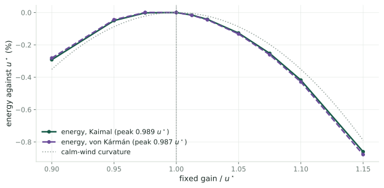
Fixed gains, no dither: the energy peaks at 0.99 \(u^\star\); mean log-power, which the loops climb, at 1.013 \(u^\star\) (1.014 von Kármán). The difference costs about 0.02 % of the energy. The dither alone, center held at \(u^\star\), costs exactly the calm-wind \(\tfrac14|J''|G_1a^2\): 0.102 % at 60 s and 0.094 \(u^\star\), 0.116 % for the published LP-PIESC dither.
Its dither \(a = 0.33\,u^\star\) at \(T\) = 314 s costs 1.94 % on its own (measured; the quadratic formula gives 1.88 %).
Its integrator Fast: it reaches the optimum’s neighborhood within the first hour, but swings the gain by 0.17 \(u^\star\) root-mean-square, about a mean 10 % above \(u^\star\).
4.5 % lost in all, steady, independent of the start
740 s its tracking time, from the linearized loop
2.42 % lost by the proposed LP-ESC for the same 740 s (\(T\) = 60 s, \(a\) = 0.31 \(u^\star\)); predicted 2.22 %
Linearized loop of the 2022 tuning: high-pass 0.018 s⁻¹, demodulation phase 0.36 rad, integrator gain 0.001.
Same amplitude, shorter period: the proposed design’s dither costs 1.11 % instead of 1.88 %.
| turbine | NREL 5 MW rotor, Heier power curve rescaled to \((7.48, 0.4895)\), \(I = 4.38\times10^7\) kg m² |
| wind | 8 m/s, TI 0.10, Kaimal (\(L\) = 340 m) and von Kármán (147 m), synthesized, 0.5 s |
| integration | adaptive Runge–Kutta (open-loop tests of one estimate); explicit Euler, 5 ms (every closed loop, both controllers) |
| energy runs | six controllers + reference at \(u^\star\), same wind; 6 days × 4 records × 2 spectra × 2 starts |
| left out | pitch, power limit, generator and converter dynamics, drivetrain flexibility; one wind speed acts on the whole rotor |
| constants | \(u^\star\) by Newton on \(J'\), \(J''\) by automatic differentiation: \(|J''|u^{\star2} = 0.7017\) (designs use \(0.7022 = 6.32/9\)); \(\tau_r\) = 6.878 s |
| checks | 629 stated numbers recomputed from formulas and stored results by the claim checker |
Every run is specified in full (equations as implemented, initial states, seeds, record lengths, statistics) in Appendix D of the technical report.
| quantity | value |
|---|---|
| rotor radius, air density | 63 m, 1.225 kg/m³ |
| optimum | \(\lambda^\star = 7.48\), \(C_P^{\mathrm{max}} = 0.4895\) |
| optimal gain | \({u^\star = 2.23\times10^6}\) N m s², normalized \({\nu^\star = 0.061}\) |
| curvature | \(\chi = 6.3\), \(|J''(u^\star)|u^{\star2} = 0.70\) |
| rotor time constant | 6.88 s at 8 m/s |
| dither periods | 60 s (recommended), 150 s (2019 design), 314 s (2022 tunings) |
| tracking time | one day (designs); 740 s for the design matched to the 2022 LP-ESC |
Tuned with \({J''_\mathrm{d} = rJ''}\), the loop tracks in \({r\tau_c}\), stays unbiased, and has amplitude \({a_\mathrm{opt}r^{-1/2}}\). The loss of Link 5 becomes
\[\ell = \frac{\ell_\mathrm{min}}{2}\Big(1 + \frac1r\Big) = \frac{\sqrt r + 1/\sqrt r}{2}\cdot\frac{\ell_\mathrm{min}}{\sqrt r},\]
where \(\ell_\mathrm{min}/\sqrt r\) is the least loss at the tracking time \(r\tau_c\) the loop actually has.
| LP-ESC, \(T\) = 60 s (Kaimal) | tracking time | \(a/u^\star\) | lost, days 2–6 | predicted |
|---|---|---|---|---|
| tuned with \(J''/2\) (\(r = \tfrac12\)) | 0.5 day | 0.133 | 0.328 % | 0.31 % |
| correct design for 0.5 day | 0.5 day | 0.112 | 0.311 % | 0.29 % |
| proposed design (\(r = 1\)) | 1 day | 0.094 | 0.227 % | 0.21 % |
| correct design for 2 days | 2 days | 0.079 | 0.160 % | 0.15 % |
| tuned with \(2J''\) (\(r = 2\)) | 2 days | 0.067 | 0.172 % | 0.15 % |
Against the correct design for the same tracking time: +5 % (\(r = \tfrac12\)) and +8 % (\(r = 2\)), predicted +6 %; von Kármán gives the same. The error shows in the tracking time, not in the energy. Mean of four six-day records; same winds as the energy table.
← Wind Turbine Control · Gradient Noise in Extremum Seeking